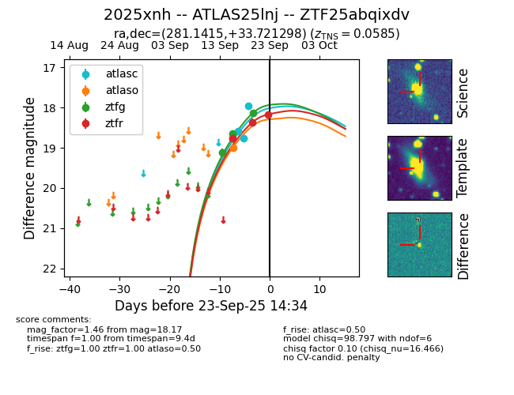
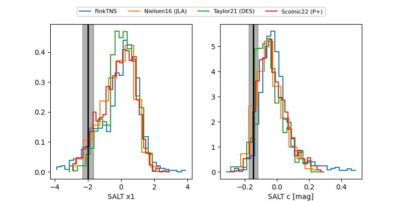

FINK: ZTF25abqixdv
Lasair: ZTF25abqixdv
ALeRCE: ZTF25abqixdv
TNS: 2025xnh
YSE: 2025xnh
ZTF25abqixdv (ztf,fink)
2025xnh (tns,yse)
ATLAS25lnj (atlas)
equatorial (ra, dec) = (281.1415,+33.72130)
galactic (l, b) = (63.0721,+15.98190)


last atlasc=17.95, atlaso=19.00, ztfg=18.13, ztfr=18.17
3 atlasc, 1 atlaso, 3 ztfg, 3 ztfr detections